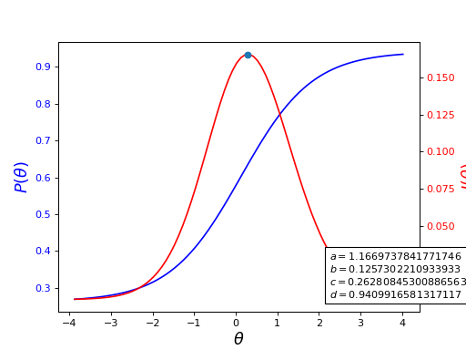

Introduction#
catsim is a Python package for computerized adaptive testing (CAT), providing both stepwise CAT execution and CAT simulation tools for a modern assessment workflow that adapts to each examinee’s ability level in real time.
What are Latent Traits?#
Assessment instruments measure latent traits - internal characteristics that cannot be directly observed, such as knowledge or personality traits. Educational and psychological tests are common examples. When a latent trait is expressed numerically, it is called an ability or proficiency.
The Problem with Linear Tests#
Traditional linear tests use a paper-and-pencil approach where all examinees answer the same items in the same order. This creates several problems:
High-ability examinees waste time on easy questions
Low-ability examinees become frustrated with overly difficult questions
Test length cannot be optimized for individual examinees
What is Computerized Adaptive Testing?#
Computerized adaptive testing (CAT) emerged in the 1970s as tailored testing [Lord, 1977]. Unlike linear tests, CAT adapts in real time:
After each item, the examinee’s ability is re-estimated
The next item is selected based on the updated ability estimate
Each examinee receives items matched to their ability level
This approach is more efficient and engaging, reducing test length while maintaining accuracy.
About catsim#
CAT systems rely on Item Response Theory (IRT), which provides the mathematical
framework for modeling tests, items, and examinees. While CAT packages exist for
R [Magis and Raîche, 2012], catsim brings these capabilities to Python. Built
on numpy and scipy, it provides:
Multiple initialization, selection, estimation, and stopping methods
A reusable CAT engine for manual and embedded workflows
Simulation tools for comparing different CAT methodologies
Item Response Theory Models#
catsim borrows many concepts from Item Response Theory
[Lord et al., 1968, Rasch, 1966], a series of models created in the second part of the 20th century
with the goal of measuring latent traits. catsim makes use of Item
Response Theory one-, two- and three-parameter logistic models, a series of models
in which examinees and items are represented by a set of numerical values (the
models’ parameters). Item Response Theory itself was created with the goal of
measuring latent traits as well as assessing and comparing individuals’ abilities
by allocating them in ability scales, inspiring as well as justifying its use in
adaptive testing.
The logistic models of Item Response Theory are unidimensional, which means that a given assessment instrument only measures a single ability (or dimension of knowledge). The instrument, in turn, is composed of items in which examinees manifest their latent traits when answering them.
In unidimensional IRT models, an examinee’s ability is represented as \(\theta\). Usually \(-\infty < \theta < \infty\), but since the scale of \(\theta\) is up to the individuals creating the instrument, it is common for the values to follow the normal distribution \(N(0, 1)\), such that \(-4 < \theta < 4\). Additionally, \(\hat{\theta}\) is the estimate of \(\theta\). Since a latent trait cannot be measured directly, estimates need to be made, which tend to get closer to the theoretical true \(\theta\) as the test progresses in length.
Under the logistic models of IRT, an item is represented by the following parameters:
\(a\) represents an item’s discrimination parameter, that is, how well it discriminates individuals who answer the item correctly (or, in an alternative interpretation, individuals who agree with the idea of the item) and those who don’t. An item with a high \(a\) value tends to be answered correctly by all individuals whose \(\theta\) is above the items difficulty level and wrongly by all the others; as this value gets lower, this threshold gets blurry and the item starts not to be as informative. It is common for \(a > 0\).
\(b\) represents an item’s difficulty parameter. This parameter, which is measured in the same scale as \(\theta\), shows at which point of the ability scale an item is more informative, that is, where it discriminates the individuals who agree and those who disagree with the item. Since \(b\) and \(\theta\) are measured in the same scale, \(b\) follows the same distributions as \(\theta\). For a CAT, it is good for an item bank to have as many items as possible in all difficulty levels, so that the CAT may select the best item for each individual in all ability levels.
\(c\) represents an item’s pseudo-guessing parameter. This parameter denotes what is the probability of individuals with low ability values to still answer the item correctly. Since \(c\) is a probability, \(0 < c \leq 1\), but the lower the value of this parameter, the better the item is considered.
\(d\) represents an item’s upper asymptote. This parameter denotes what is the probability of individuals with high ability values to still answer the item incorrectly. Since \(d\) is a probability, \(0 < d \leq 1\), but the higher the value of this parameter, the better the item is considered.
For a set of items \(I\), when \(\forall i \in I, c_i = 0\), the
three-parameter logistic model is reduced to the two-parameter logistic model.
Additionally, if all values of \(a\) are equal, the two-parameter logistic
model is reduced to the one-parameter logistic model. Finally, when
\(\forall i \in I, a_i = 1\), we have the Rasch model [Rasch, 1966]. Thus,
catsim is able of treating all of the logistic models presented above,
since the underlying functions of all logistic models related to test simulations
are the same, given the correct item paramaters.
Under IRT, the probability of an examinee with a given \(\hat{\theta}\) value to answer item \(i\) correctly, given the item parameters, is given by [De Ayala, 2009, Magis, 2013]
The information this item gives is computed as [De Ayala, 2009, Magis, 2013]
Both of these functions are graphically represented in the following figure. It is possible to see that an item is most informative when its difficulty parameter is close the examinee’s ability.
(Source code, png, hires.png, pdf)
{kind=link}
{kind=link}

Fig. 1 Item characteristic and information curves for an item. The dot represents the point at which the item is most informative.#
The sum of the information of all items in a test is called test information [De Ayala, 2009]:
The amount of error in the estimate of an examinee’s ability after a test is called the standard error of estimation [De Ayala, 2009] and it is given by
Since the denominator in the calculation of the \(SEE\) is \(I(\theta)\), it is clear to see that the more items an examinee answers, the smaller SEE gets.
catsim provides these functions in the catsim.irt() module.
The Item Matrix#
In catsim, a collection of items is represented as a numpy.ndarray whose rows and columns represent items and their parameters, respectively. Thus, it is referred to as the item matrix. The most important features of the items are situated in the first three columns of the matrix, which represent the parameters \(a\), \(b\) and \(c\), respectively. Item matrices can be generated via the catsim.cat.generate_item_bank() function as follows:
>>> generate_item_bank(5, '1PL')
>>> generate_item_bank(5, '2PL')
>>> generate_item_bank(5, '3PL')
>>> generate_item_bank(5, '3PL', corr=0.5)
These examples depict the generation of an array of five items according to the different logistic models. In the last example, parameters \(a\) and \(b\) have a correlation of \(0.5\), an adjustment that may be useful in case simulations require it [Chang et al., 2001].
Historically, catsim stored item exposure rates in an additional item-matrix column. In the current architecture, exposure is better treated as run-level output derived from simulation results. When represented, the exposure rate is commonly denoted as \(r\) and computed as follows:
Where \(q_i\) represents the number of tests item \(i\) has been used on and \(N\) is the total number of tests applied.
Computerized adaptive tests#
Unlike linear tests, in which items are sequentially presented to examinees and their ability estimated at the end of the test, in a computerized adaptive test (CAT), an examinee’s ability is updated after the response of each item. The updated knowledge of an examinee’s ability at each step of the test allows for the selection of more informative items during the test itself, which in turn reduces the standard error of estimation of their ability at a faster rate.
The CAT Lifecycle#
In general, a computerized adaptive test has a very well-defined lifecycle:
![digraph cat_simple {
bgcolor="transparent";
rankdir=TB;
a[label=<START>, shape=box];
b[label=<Initial ability<br/>estimation>];
c[label=<Item selection and <br/>administration>];
d[label=<Capture answer>];
e[label=<Proficiency estimation>];
rank=same;
f[label=<Stopping criterion<br/>reached?>, shape=diamond];
g[label=<END>, shape=box];
a -> b -> c -> d -> e -> f;
f -> g[label=<YES>];
f -> c[label=<NO>];
}](_images/graphviz-80632ff27b6da190db7811b7f3f4779f8ffed487.png)
The examinee’s initial ability is estimated;
An item is selected based on the current ability estimation;
The ability is reestimated based on the answers to all items up until now;
If a stopping criterion is met, stop the test. Else go back to step 2.
There is a considerable amount of literature covering these four phases proposed by many authors. In catsim, each phase is separated in its own module, which makes it easy to create simulations combining different methods for each phase. Each module will be explained separately, along with its API.
Initialization#
The initialization procedure is done only once during each examinee’s test. In it, the initial value of an examinee’s ability \(\hat\theta_0\) is selected. This procedure may be done in a variety of ways: a standard value can be chosen to initialize all examinees (catsim.initialization.FixedPointInitializer); it can be chosen randomly from a probability distribution (catsim.initialization.RandomInitializer); the place in the item bank with items of more information can be chosen to initialize \(\hat\theta_0\) etc.
In catsim, initialization procedures can be found in the catsim.initialization module.
Item Selection#
With a set value for \(\hat{\theta}\), an item is chosen from the item bank and presented to the examinee, which the examinee answers and its answer, along with the answers to all previous items, is used to estimate \(\hat{\theta}\).
Item selection methods are diverse. The most famous method is to choose the item that maximizes the gain of information, represented by catsim.selection.MaxInfoSelector. This method, however, has been shown to have some drawbacks, like overusing few items from the item bank while ignoring items with inferior parameters. In order to correct that, other item selection methods were proposed.
In catsim, an examinee’s response to a given item is simulated by sampling a binary value from the Bernoulli distribution, in which the value of \(p\) is given by the IRT logistic model characteristic function (catsim.irt.icc()), given by:
In catsim, item selection procedures can be found in the catsim.selection module.
Proficiency Estimation#
Proficiency estimation occurs whenever an examinee answers a new item. Given a dichotomous (binary) response vector and the parameters of the corresponding items that were answered, it is the job of an estimator to return a new value for the examinee’s \(\hat{\theta}\). This value reflects the examinee’s ability, given his or hers answers up until that point of the test.
In Python, an example of a list that may be used as a valid dichotomous response vector is as follows:
>>> response_vector = [1,1,1,0,1,1,0,1,0,0,1,0,0,0,1,0]
Estimation techniques are generally separated between maximum-likelihood estimation procedures (whose job is to return the \(\hat{\theta}\) value that maximizes the log-likelihood function, presented in catsim.irt.log_likelihood()); and Bayesian estimation procedures, which tend to use a priori information of the distributions of examinee’s abilities to estimate new values for them.
In catsim, ability estimation procedures can be found in the catsim.estimation module.
Stopping Criterion#
Since items in a CAT are selected on-the-fly, a stopping criterion must be chosen such that, when achieved, no new items are presented to the examinee and the test is deemed finished. These stopping criteria might be achieved when the test reaches a fixed number of items or when the standard error of estimation (catsim.irt.see()) reaches a lower threshold. These stopping criteria are implemented in catsim.stopping.MinErrorStopper and catsim.stopping.ConfidenceIntervalStopper, both supporting optional minimum and maximum item constraints and automatic item bank exhaustion detection.
In catsim, test stopping criteria can be found in the catsim.stopping module.
Package architecture#
catsim was built using an object-oriented architecture,which introduces many benefits for its maintenance and expansion. As explained in previous sections, each phase in the CAT lifecycle is represented by a different module in the package. Additionaly, each module involved in the CAT lifecycle has a base abstract class, which must be implemented if a new methodology is to be presented to that module’s respective phase. This way, new users can implement their own methods for each phase of the CAT lifecycle, or even an entire new CAT lifecycle while still using catsim and its features to simulate tests, plot results etc. Modules and their corresponding abstract classes are presented on Table 1.
Module |
Abstract class |
|---|---|
|
|
|
|
|
|
|
|